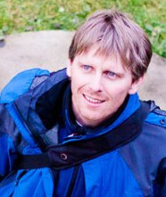
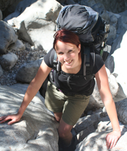
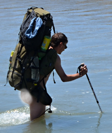
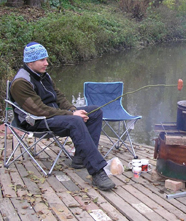
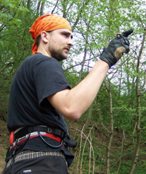
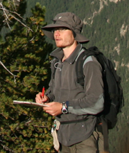
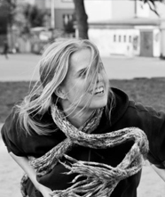
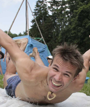

Tým outdooru

Radek Drnovský
Věk: 38 let
Co dělám: jsem lektor osobního rozvoje, organizuju zažitkové vzdělávací
kurzy, dobrodružné hry a závody
Co mě baví: baví mě moje práce, pořádat zážitkové a vzdělávací kurzy. V
programech mám rád prvky napětí, dobrodružství, pohybu, outdooru... moc
se těším, že to právě na Outdoorvíkendu využiju. Rád sportuju, cestuju
po Česku i cizině, fotím.
Zkušenosti s outdoorem: Turistický oddíl už na základce, potom vedoucí
vlastního oddílu. Pořádání mnoha outdoorových zážitkových i turistických
akcí. Cestuju rád po rumunských horách, norských fjordech, afrických
pouštích, amerických pralesech, v Andách i Himaláji. Vždycky se rád
vracím do jeskyní v Moravském Krasu.

Irena Drnovská
Věk: 28 let
Co dělám: vedu rodinný hotel na pomezí Jeseníků a Orlických hor.
Co mě baví: ráda chodím po kopcích, lesích a lukách za každého počasí. Příroda mě
uklidňuje a naplňuje energií. S kamarády si užívám organizování zážitkových akcí, povídání u vína,
výletů po blízkém i dalekém kraji. Baví mě tvořit doplňky do domácnosti, zkrášlující ozdoby a také ráda
vařím různé dobroty, na kterých si pochutnám spolu s kamarády.
Zkušenosti s outdoorem: Jsem cérka z vesnice, takže pohyb v přírodě je můj přirozený pohyb:-) Ráda chodím po horách, jezdím na kole po nížinách, plavím se po řekách a potápím se do hlubin u nás i v cizině. Jsem vděčná orgům za úžasné zážitky na outdoorových závodech (88, Tera Incognita) a za zkušenost, že máme na mnohem mnohem víc, než si myslíme.

Matěj Glum Píro
Věk: 24 let
Co dělám: Jsem student geografie na Masarykově univerzitě, dlouholetý vodní skaut a přítel dobrého běhu.
Co mě baví: Ťapat po horách, spát pod hvězdičkama, dýchat jarní vzduch a chytat vlaštovky. Když zrovna musím být ve městě, čtu, hraju na kytaru a vymýšlím způsoby jak se nenudit.
Zkušenosti s outdoorem: Pořádám tábory pro skautíky, sjíždím řeky a běhám po kopcích. Kouknul jsem se na několik outdorových závodů jako účastník i pořadatel. Měl jsem tu čest vyhnout se hadovi v Austrálii, hledat kyslík v Tibetu, smát se kamarádovi bez pláštěnky na Islandu a utíkat komárům v Laponsku.

Dan Buršík
Věk: 20 a kousek
Co dělám: státní zaměstnanec
Co mě baví: dělat zajímavé věci jinde než mezi 4-mi stěnami
Zkušenosti s outdoorem:v lese, poušti i pralese jsem už byl a na většině outdoor závodů taky

Lukáš Srnka
Věk: 29 let
Co dělám: vychovávám a vzdělávám děti
Co mě baví: běhat po kopcích i nekopcích a lézt po stromech, tři dny nazamhouřit oko a
pak dva sny spát, probudit se a roztápět sníh na čaj, nebo jen tak v klidu hrát šachy, pít víno a mlátit do djembe
Zkušenosti s outdoorem:

Petr Matula
Věk: 31 let
Co dělám: mojí životní náplní a povoláním je tvorba map pro orientační běh.
Co mě baví: Mám rád pohyb v přírodě a sportování všeho druhu. Nemám rád např. plavání ve studené vodě.

Katka Burčková
Věk: 28 let
Co dělám: pracuji v Centru molekulární biologii a genové terapii a když mám dost energie tak studuji doktoranské studium
Co mě baví: svůj volný čas ráda trávím na stěne, tanečním parketu při volejbalu, nebo při sklence vína. Pokud to jen trochu jde tak jedu na hory s báglem na zádech nebo někam na vodu. Když už je toho moc, tak se odreagovávám v kuchyni při pečení sladkých dobrot.
Zkušenosti s outdoorem:Už od dětství chodím do skautu, sjíždím české a slovenské řeky, jezdím lyžovat a chodím po horách. Vyzkoušela jsem si nějaký ten outdoorový závod a ušla 100 km za 20 hodin. Poslední dobou organizuji různorodé šílenosti pro dorost a dospělé

Tom Palda Paleček
Věk: 39 let
Co dělám: ač jsem vystudoval sport a zeměpis, už docela dlouho učím angličtinu, organizuju kurzy windsurfingu, občas nafotím i svatbu
Co mě baví: baví mě být venku a někam cestovat. Programy které dělám jsou o adrenalinu, překonání překážek, často je v nich tma a neznámo. Jsem nadšený windsurfer, potloukám se po Česku i cizině. Dost jsem fotil na cestách, vyšly i dvě knížky a třeba i fotky na tomhle webu outdoor víkendu jsou vesměs moje.
Zkušenosti s outdoorem: No začalo to pionýrem, ale dělali jsme to samé jako skauti. Pak se jezdilo hodně po horách u nás, v Itálii, Rakousku. Kolem třicítky cesta kolem světa na dva roky a pak už jen tři měsíce v Jižní Americe. Teď jezdím do Chorvatska...posledně na 6 týdnů, protože krásně foukalo. Trošku mi to cestováni komplikuje rodinka;o)
Mám to moc rád na Vysočině a v Jižních Čechách na kolech.